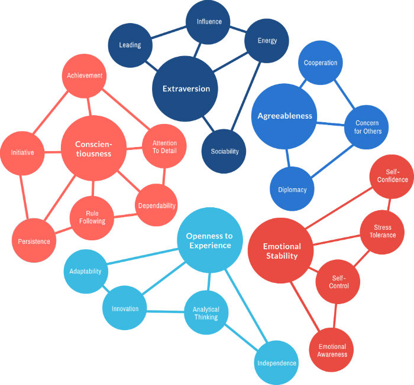
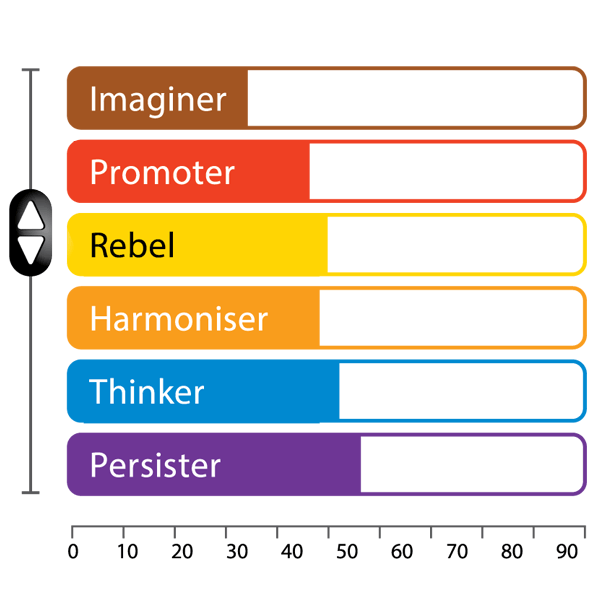
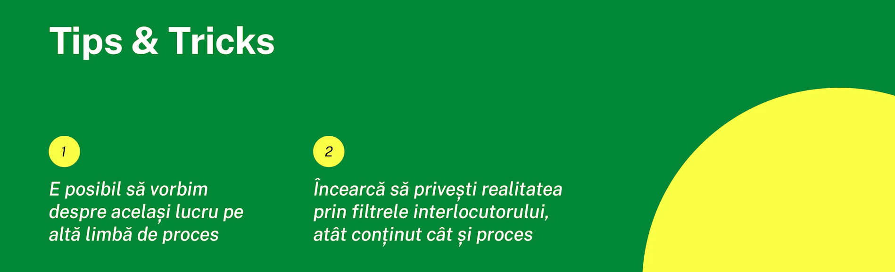
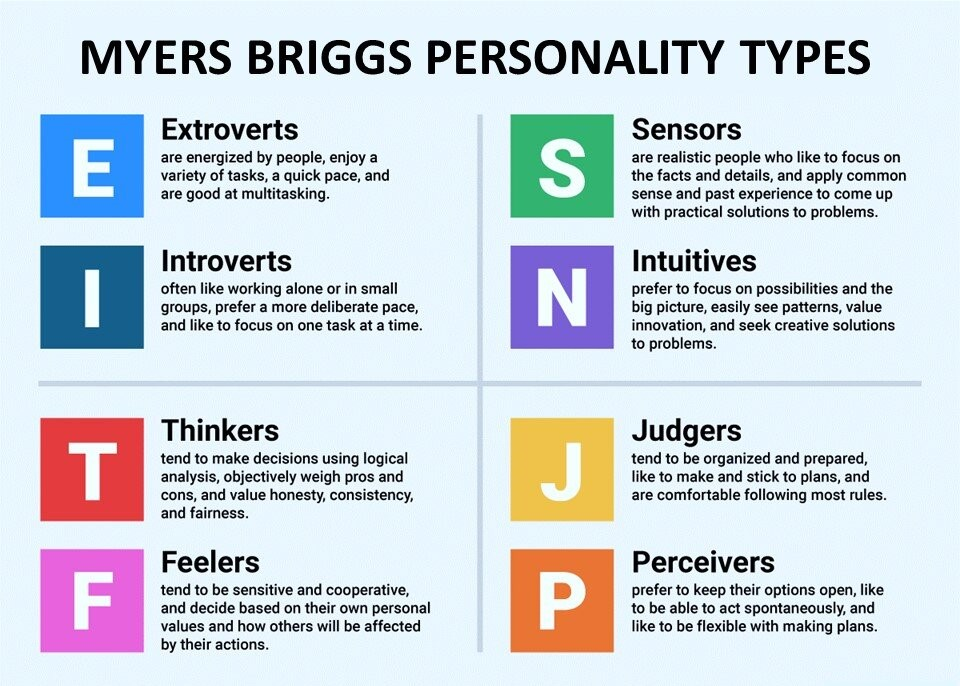
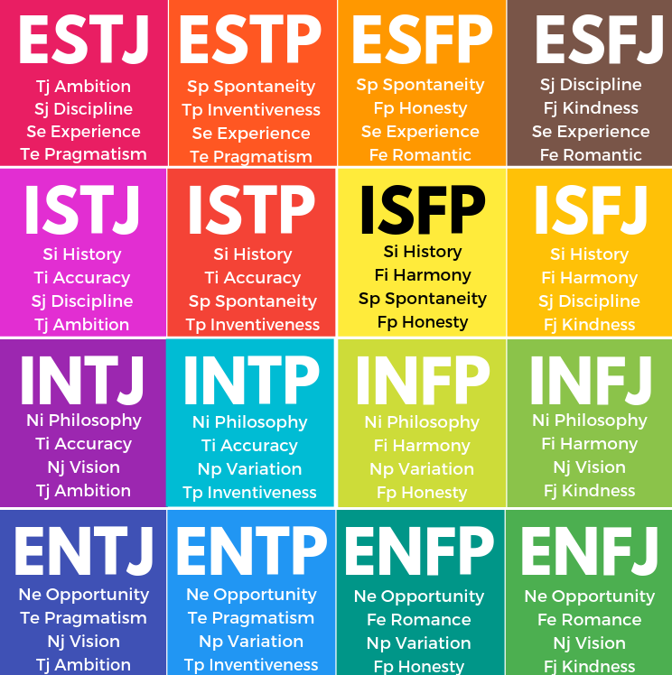

PERSONALITATEA
"Personalitatea este un lucru prea complex pentru a fi încorporată
într-o "cămaşă de forţă" conceptuală." (Gordon Allport)
Personalitatea este alcătuită din tiparele caracteristice ale gândurilor, sentimentelor și
comportamentelor care fac o persoană unică. Aceasta apare din interiorul individului și
rămâne destul de consecventă pe tot parcursul vieții.
Personalitatea are două trăsături fundamentale:
- individualizarea, prin trăsături care ne diferențiază
de ceilalți, particularizându-ne
- persistența în timp, prin faptul că acționăm asemănător
în situații diferite de-a lungul vieții
Aceasta nu este ceva cu care ne naștem, copiii mici semănând unii cu alții la naștere.
Pe măsură ce cresc, ei se diferențiază prin dezvoltarea unor trăsături personale. Cum anume
se realizează dezvoltarea personalității, este o problemă pe care teoreticienii o tratează diferit.
Unii accentuează importanța mediului social (familie, școală, prieteni etc.) în care ne dezvoltăm,
în timp ce alți teoreticieni tratează personalitatea atomar, ca fiind constituită din anumite componente
indiferente la mediul în care ne dezvoltăm. Care dintre cele două orientări are dreptate nu se poate spune cu
exactitate, ele coexistând. Cert este că unele aspecte ale personalității noastre țin de condițiile
dezvoltării, în timp ce altele se constituie indiferent de acestea.

Modelul PCM
În anul 1976, Taibi Kahler propune în lucrarea sa, “The Miniscript”, o nouă teorie despre personalitatea umană,
care a ajuns să reprezinte un instrument inovativ ce ne oferă posibilitatea să înțelegem mai în amănunt tiparele
personalității noastre, iar în 1978 a fost adoptată de către NASA pentru a-i ajuta în selecția echipelor care
urmau să plece în misiuni spațiale.
Fiecare dintre noi dispune de o arhitectură a personalității distribuită pe 6 nivele:
parterul (unde se întâlnește cea mai pregnantă trăsătură a personalității - este înnăscută) și
5 etaje (celelalte 5 dimensiuni, intensitatea acestora fiind invers proporțională cu numărul etajului
la care se găsesc). Toate cele 6 dimensiuni sunt prezente la fiecare dintre noi, dar la nivele diferite,
combinațiile acestora fiind variate.

THINKER
- percepe lumea factual, cu ajutorul datelor
- persoană logică, responsabilă și organizată
- tendița de a se supraîncărca cu activități
- caută aprecierea altora pentru munca depusă
- vrea informații clare și structurate
IMAGINER
- percepe lumea reflectând
- persoană calmă, reflexivă, cu o capacitate bună de introspecție
- are nevoie de spațiu personal
- în caz de conflict are tendința de a se izola
- introvertă
PERSISTER
- judecă realitatea printr-un sistem de valori
- nevoia de a-i fi recunoscute opiniile
- apreciază efortul și implicarea altora
- în caz de conflict devine rigidă și tinde să nu mai accepte idei diferite de ale sale
- are tendința de a generaliza
HARMONISER
- percepe lumea în emoții
- persoană caldă, empatică și cu multă compasiune
- nevoia de validare pentru ceea ce este
- are nevoie de stimulare senzorială
- în caz de conflict tinde să se autoînvinovățească
PROMOTER
- percepe lumea în acțiune
- persoană cu inițiativă, adaptabilă și persuasivă
- nevoia de stimulare atât senzorială, cât și mentală
- dorește să obțină rezultate rapide
- are tendința să-și asume multe riscuri și să-și piardă repede răbdarea
REBEL
- percepe lumea în reacții
- persoană spontană, creativă și jucăușă
- dorința de distracție continuă
- în caz de conflict tinde a plasa vina pe alții

MBTI
Un alt concept, potrivit teoriei "Tipurilor Psihologice" aparținând lui Jung, cu toții suntem
împărțiți în tipuri fundamentale, iar capacitatea fiecăruia de a procesa diferite informații
este limitată de tipul căruia îi aparținem. Cu toate acestea, personalitatea este un element volatil
și ne putem schimba tiparul de mai multe ori în timpul vieții.
Jung a stabilit patru caracteristici sau predispoziții principale ale personalității

Iar prin combinarea acestor 8 dimensiuni rezultă 16 tipare de personaliatate distincte
